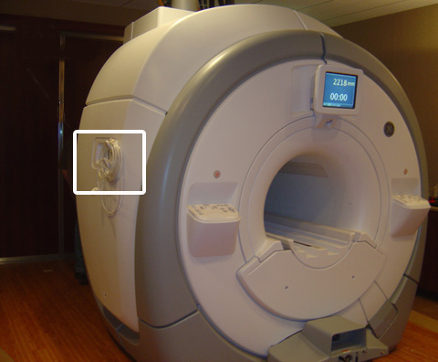
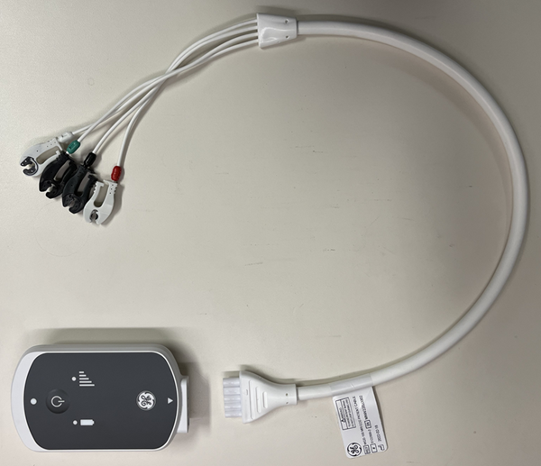

Important The safety analyzer must be located as far away from the magnet as possible to successfully execute this test. Getting closer to the magnet affects the safety analyzer and alters the tool’s ability to take an accurate measurement.
Procedure
Do one of the following:
(For wired gating)
Plug the analyzer into a power source in the magnet room which allows access to the patient table ECG port on the left side of the magnet enclosure, while staying as far away as possible from the magnet.
The patient table ECG port is on the left side of the magnet, regardless of system version. The example shown below is an MR450 system.
Figure 1. Patient table ECG port location (example)

(For wireless gating) Plug the analyzer into a power source away from magnet.
Note At facilities with 110-120 VAC, a fault error may appear when you power the meter on. Press F4 OK to clear the error and continue.
(For wireless gating) Establish communications between the PAT and the Physiological Acquisition Wireless Station (PAWS) by pressing the soft button on the PAT while in the scan room and waiting for the wireless signal strength LED illuminates solid green.
Do one of the following:
(For wired gating) At the patient monitor accessory hook, connect the patient lead cable and the cardiac lead set at the ECG connector.
(For wireless gating) Connect one end of the ECG cable to one of the PAT. Repeat same steps on all the available PAT's present on site.
Note The test should be carried out in the bay with wireless installed and powered up. The test should be carried out when connected to PAWS. The PAT LED indicator must be solid green when they are connected.
Figure 2. ECG cable and PAT

Attach the Fluke BJ2ECG Input Jack Adapter to the Fluke ESA612 Safety Analyzer.
Connect the ECG leads to the Fluke BJ2ECG Input Jack Adapter, matching:
Right arm (RA) lead (White) to RA input jack adapter
Left leg (LL) lead (Red) to LL input jack adapter
Left arm (LA) lead (Black) to LA input jack adapter
Right leg (RL) lead (Green) to RL input jack adapter
The fifth input jack adapter is not used for these tests.